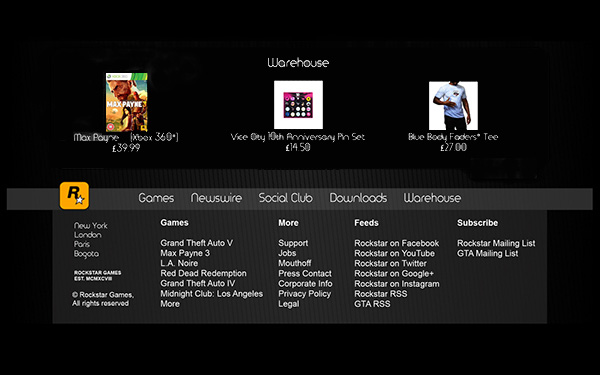

In this section we will discuss the whole visual design and main design techniques which were used in the design of this web site. The techniques for critique this web site were taken from the lectures in weeks 1-6. Used techniques are cover: balance, typography, proximity, alignment, repetition and consistency, contrast and white space.

The web-site is having too many updates (in start, nearly one time per month and every update of games because Rockstar games became popular and so expensive company, they started many online services and some online projects such as online games, online chats and forums (rockstargames social club) and payment systems in games. All of this required updates and maintain every day.
In total, the web-site had tree redesigns. The first was in December of 1998. It was the very black background and all main information like games, news, dates were at the center of the page. The site had basic hyperlinks to other pages. The next re-design of the website was between 2004 and 2011. In that period, the website has got adobe flash element, better aesthetics and layout. The style was changed to one big mainframe on the center of the page and two other frames with menu buttons at the top and useful links at the bottom of the page, Left and right space were in black background and did not use. Navigation buttons was on top "Header" and were improvements and used flash animations. In the bottom "footer" part of website, were just links to other web pages (support, privacy, etc.).
Since 2011 year, the website had new changes. First of all, the background got pictures which are changing every day by using JavaScripts. The website started use iFrames with white color of background. The site includes six iFrames. One small iFrame placed at the top of page and contain navigation buttons and registration links. The center iFrame has horizontal orientation and has video announcement about games and features. Next three iFrames have vertical orientation. There are news, features and social club info on this iframes. Last one, at the "footer" main page contain information and links about privacy, support, etc. All IFrames include flash and JavaScripts elements.
The combination of white space and balancing is so interesting. The main page has used vertical asymmetrical balancing to layout the main body area into two columns. Actually the main body contain four columns: one for video announcement and three for news, features and social club. However, last three are combine together horizontally and looks like one column. This method is the best way to highlighting new releases, updates and important news. When the user look at this site, he will look first on the video, news and then, the eyes coming to top or bottom part of the site. I think this is the main target of this page is shows main news and developers successfully realized this. Other web pages have the different structures. Main difference is to use only three columns, two of them in the header and footer. Another one, the biggest in the main body of page and content main information. All iFrames have white color of background and pictures for main background used light colors. So it is makes site so friendly for eyes and make it easier for reading.
Contrast in this website realized with the usual approach, The colours used are slightly muted and used warmer colours like: yellows light greens and oranges. Darker tones are used mostly for fonts and highlighting the displayed content, while lighter colour used for frame background. This is like a standard, most of web sites use same contrast (white for background and dark for content on it. By using dark fonts on white background, it became easier for visitor to read web site content. Pictures on the web site background have yellow, green and orange colors, it are also in same contrast with frame content. All components of rockstargames.com in the warm color harmony and optimally contrasted, it is makes the web site more convenient for eyes. Sometimes, the background picture changed to so contrasted picture, it can take red, black and dark blue colors. In my opinion, it is makes the web site harder for reading and difficult to navigate between pages.
The fonts used on the web-site are from sans serif family. They are Helvetica, HelveticaNeueW and Arial. They are used for all text in the all pages. The fonts are used in Top, body and bottom frames. The rockstargames logo also completed with Arial font. They used in the usual text, headers, and titles. It is the good idea because the text is clear and good for reading. The font looks like as standard fonts and so convenient for visitors. The size of the fonts have many variants, I have found sizes 9, 11, 12, 13, 16, 18, 30 by font finder google app. Sizes 11, 12, and 13 used for the usual text in body part of pages and 11 used for phrases in the top part of web page. 16, 18 and 30 used for highlighting text, headers, sign in button in the registration part. The size number 9 is used for technical information such as number of comments, number of views, etc. The size of fonts on the web site has been chosen correctly and intelligently. It is good for reading and highlight important information.
The consistency of web site is really interesting. Each page has different number of frames, but all of pages have similar template. Usually it has three zones: Top zone for web site menu, center zone for main content and information and bottom for technical support, etc. Most page looks like similar and it make web site better for navigation and looks good. All page looks similar, however all of them have different structure, for example the home page has three frames in the center: news, social club and featured. Games page have only one frame in the center, but the layout of these pages is pretty similar and eyes can navigate easily, they do not need time for adoption. Top and bottom zones repeated on all page and it is the better approach for menu buttons and technical information. So web site realized with better consistency and use repetition methods in specific places.
The web site used standard tools for proximity and unity ,It are used to group all items together and highlight some main items in the body section. In the whole frame, columns are divided into small boxes to show parts of website segmentally. This is realized by keeping a gap between each box using DIV and lists and CSS properties. All types of content keeping in individual boxes and they are close together. This is creating unity and creating a small gap between boxes. After that, they have the look of separated areas. Offsetting each box also helps content look grouped and separated from different content. Overall, the content looks separated. In my opinion, in some pages, boxes of same content are separate (content divided on many boxes, but it can be placed in two or one boxes) separated and did not looks like as boxes which have the same content.
Alignment is realized same as many web sites. First of all, the content on this web page is always has centre align (just in newswire page it is centre, but when the right frame ended while scroll down the page, the mainframe with news become left align, this put the content in the middle and make it easy for reading. Secondly, the text is aligned to the left, it is makes reading the text easier like the usual computer document. Also it helps to organize this text. Thirdly, the menu bar have center align and also aligned to the main body section. It make it like connected parts, however physically they are not connected. All page have different main body structures, but usually it is boxes with vertical alignment divided into one, two or three columns, but actually they are aligned horizontally. This is interesting way, but in the same moment it helps to readers focused on main content on page.